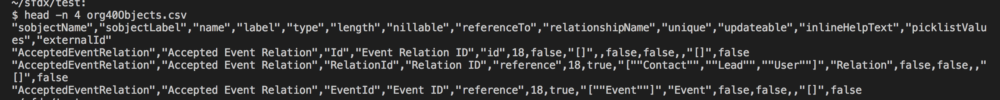

{{appName}}
sfdx-mohanc-plugins
- install:
sfdx plugins:install sfdx-mohanc-plugins - usage:
sfdx mohanc:projectFile:gen - purpose:
- Creates project json files for the given sfdx-project.json
- Creates deploy.sh to run the source:push in sequence
sfdx-mohanc-plugins - Demo-1
Full Viewsfdx-mohanc-plugins - Demo-2
Full Viewsfdx mohanc:md:rename plugin - Demo
Full Viewsfdx-mohanc-plugins → md:rename
- install:
sfdx plugins:install sfdx-mohanc-plugins - usage:
sfdx mohanc:md:rename -r update.json -
Example: Renames the given metadata type as given in the input file sfdx mohanc:md:rename -r update.json $ cat update.json | jq { "updates": [ { "mdtype": "CustomField", "fullName": "Account.Hot_Status__c", "label": "HOT STAT", "type": "Text", "length": 12 } ] }
sfdx-mohanc-plugins → data:transform:rt
- install:
sfdx plugins:install sfdx-mohanc-plugins - usage:
sfdx mohanc:data:transform:rt -i /tmp/Accounts.json -o /tmp/Accounts.out.json -e sobjectName -
** Transforms the RecordTypeIds of the extracted json to target org RecordTypeIds ** sfdx mohanc:data:transform:rt -i /tmp/Accounts.json -o /tmp/Accounts.out.json -s n -e sobjectName Note: flag: e is optional. Tool can read from the inputfile to figure out sobjectName bash script to process all the files in a folder: ------------ for file in /tmp/* do echo Processing "$file" ... sfdx mohanc:data:transform:rt -i $file -o $file.out.json -s y|n -e Account done -----------
sfdx-mohanc-plugins → data:transform:ur
- install:
sfdx plugins:install sfdx-mohanc-plugins - usage:
sfdx mohanc:data:transform:ur -i /tmp/input.json -o /tmp/input.out.json -s y|n -
** Transforms the UserRoleIds of the extracted json to target org UserRoleIds ** sfdx mohanc:data:transform:ur -i /tmp/input.json -o /tmp/input.out.json -s y|n bash script to process all the files in a folder: ------------ for file in /tmp/* do echo Processing "$file" ... sfdx mohanc:data:transform:ur -i $file -o $file.out.json -s y|n done -----------
sfdx-mohanc-plugins → data:transform:acct
- install:
sfdx plugins:install sfdx-mohanc-plugins - usage:
sfdx mohanc:data:transform:acct -i /tmp/input.json -o /tmp/input.out.json -
** Transforms the AccountId of the extracted json to target org AccountId ** sfdx mohanc:data:transform:acct -i /tmp/input.json -o /tmp/input.out.jso bash script to process all the files in a folder: ------------ for file in /tmp/* do echo Processing "$file" ... sfdx mohanc:data:transform:acct -i $file -o $file.out.json done -----------
sfdx-mohanc-plugins → tooling:execute
- install:
sfdx plugins:install sfdx-mohanc-plugins - usage:
sfdx mohanc:tooling:execute -u TestOrg2 -a apexCode.cls -
** Execute Anonymous Apex ** $ sfdx mohanc:tooling:execute -u TestOrg2 -a apexCode.cls
sfdx-mohanc-plugins → data:transform:profile
- install:
sfdx plugins:install sfdx-mohanc-plugins - usage:
sfdx mohanc:data:transform:profile -i /tmp/cs.in.json -o /tmp/cs.out.json -
** Transforms the ProfileName of the extracted json to target org ProfileId ** sfdx mohanc:data:transform:profile -i /tmp/input.json -o /tmp/output.json -s n bash script to process all the files in a folder: ------------ for file in /tmp/* do echo Processing "$file" ... sfdx mohanc:data:transform:profile -i $file -o $file.out.json -s y|n done -----------
sfdx-mohanc-plugins → data:transform:contact
- install:
sfdx plugins:install sfdx-mohanc-plugins - usage:
sfdx mohanc:data:transform:contact -i /tmp/input.json -o /tmp/input.out.json -s y|n -
** Transforms the ContactId of the extracted json to target org ContactId ** sfdx mohanc:data:transform:contact -i /tmp/input.json -o /tmp/input.out.json -s y|n bash script to process all the files in a folder: ------------ for file in /tmp/* do echo Processing "$file" ... sfdx mohanc:data:transform:contact -i $file -o $file.out.json -s y|n done -----------
sfdx-mohanc-plugins → data:transform:simplify
- install:
sfdx plugins:install sfdx-mohanc-plugins - usage:
sfdx mohanc:data:transform:simplify -i /tmp/input.json -o /tmp/input.out.json -e sobjectName -
** Transforms the given object into simple key:value format ** sfdx mohanc:data:transform:simplify -i /tmp/input.json -o /tmp/input.out.json -e sobjectName bash script to process all the files in a folder: ------------ for file in /tmp/* do echo Processing "$file" ... sfdx mohanc:data:transform:simplify -i $file -o $file.out.json -e sobjectName done -----------
Using Alias
sfdx-mohanc-plugins → data:transform:un
- install:
sfdx plugins:install sfdx-mohanc-plugins - usage:
sfdx mohanc:data:transform:un -i /tmp/input.json -o /tmp/input.out.json -
** Transforms the given Usernames to unique Usernames ** sfdx mohanc:data:transform:un -i /tmp/input.json -o /tmp/input.out.json bash script to process all the files in a folder: ------------ for file in /tmp/* do echo Processing "$file" ... sfdx mohanc:data:transform:un -i $file -o $file.out.json done -----------
Model export
Sample Login JSON file Model export Usage
## for scratch-org:
sfdx mohanc:md:describe -s RecordType
# For Sandbox/DE/PROD: Establish connection with:
# In case of sandbox use : sfdx force:auth:web:login -r https://test.salesforce.com
# In case of PROD or DE use : sfdx force:auth:web:login -r https://login.salesforce.com
## for DE or sandbox or PROD, when you do not want to use OAUTH2:
# Sample login.json :https://mohan-chinnappan-n.github.io/dx/samples/login-sample.json
# sfdx mohanc:md:describe -s RecordType -l login.json -o org40
## ---- For full org metadata export: scratch org ----
sfdx mohanc:md:describeGlobal > ObjectList.txt
sfdx mohanc:md:describe -i ObjectList.txt
## For full org metadata export: sandbox/DE/PROD org
sfdx mohanc:md:describeGlobal -u username > ObjectList.txt
sfdx mohanc:md:describe -u username -i ObjectList.txt > org-md.csv
Model export Usage - Demo

How to get ERD for the given SObjects list
## ---- how to draw ER Diagram for the given SObjects along with model export for them ----
## SObjects list is comma-separated as shown below:
### If you have dot program installed in your OS, ERD will be drawn in svg format :
sfdx mohanc:md:describe -s Contact,Account -e contact-account.svg > contact-account.csv
### for Sandbox/DE/PROD
sfdx mohanc:md:describe -u USERNAME -s Contact,Account -e contact-account.svg > contact-account.csv
### If you do NOT have dot program installed in your OS, ERD will be drawn in dot format :
sfdx mohanc:md:describe -s Contact,Account -e contact-account.dot > contact-account.csv
### You can use our online dot-viewer to view the ERD:
open https://mohan-chinnappan-n.github.io/viz/viz.html
### Click Open button in this app to load the dot file into this app
Viewer App for DOT files
How to get ERD for the given SObjects list - Demo

jq filter
Data Vlookup
Data Transformations
Einstein Analytics (EA) Query
See: FSC - EA Dashboards